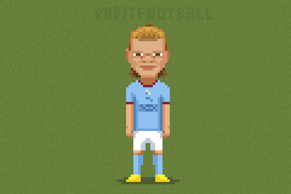

KONFACTION TRØNDELAG FOTBALLCUP
Finn nøkkelordet.
9. oktober åpner vi med et lite bibelspor før turneringen. Svaret skiller ikke mellom store og små bokstaver.

KONFACTION TRØNDELAG FOTBALLCUP
9. oktober åpner vi med et lite bibelspor før turneringen. Svaret skiller ikke mellom store og små bokstaver.